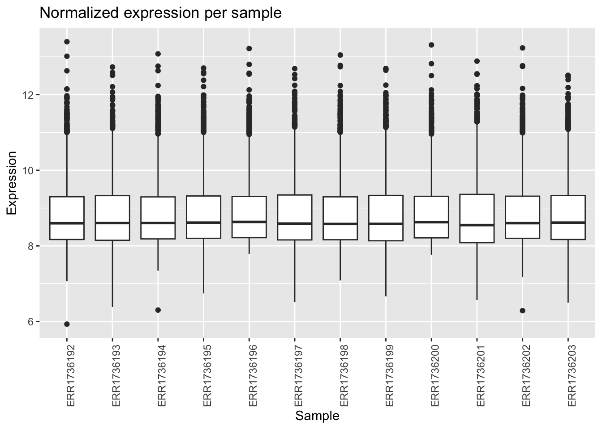
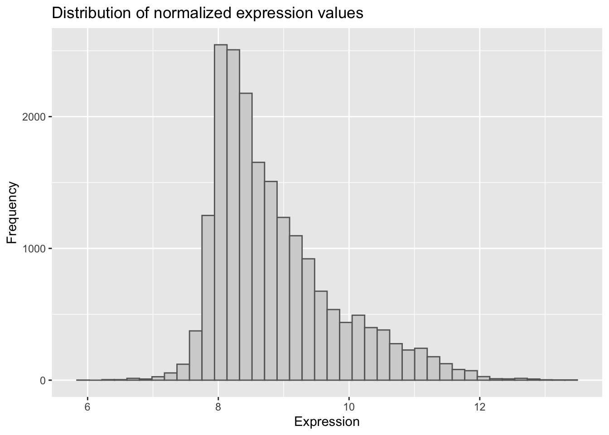
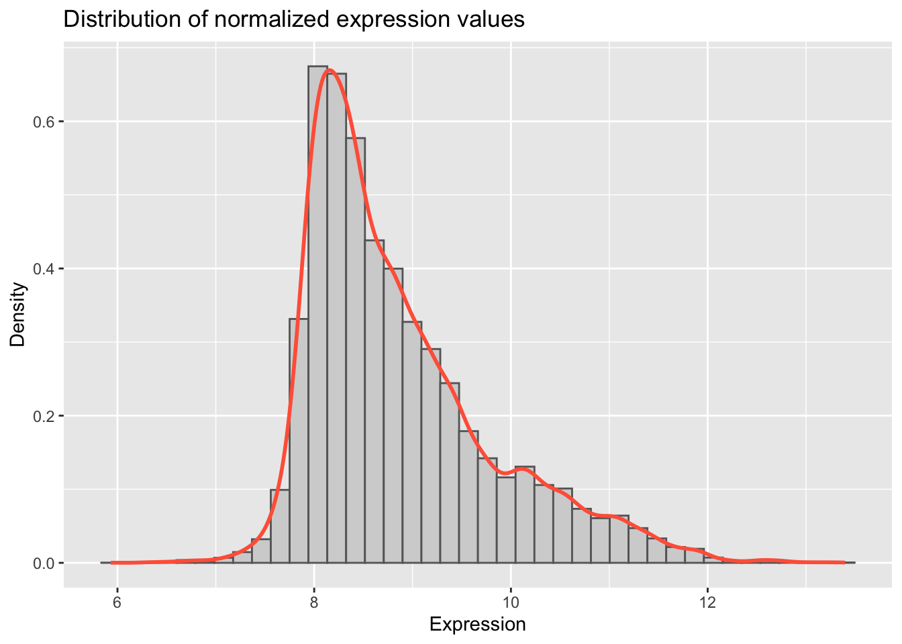

# install.packages("ggplot2")
library(ggplot2)
data <- readRDS(gzcon(url(
"https://raw.githubusercontent.com/urppeia/publication_figs/main/data.rds"
)))
rownames(data$counts) <- data$counts$Gene_ID
data$counts <- data$counts[,-1]Block 2: ggplot2
Introduction to ggplot2
ggplot2 is a powerful and popular R package for creating a wide variety of plots. It is based on the “grammar of graphics” philosophy, which allows you to build plots layer by layer. This makes it easy to create complex and customized visualizations.
Base R vs. ggplot2
| Feature | Base R | ggplot2 |
|---|---|---|
| Philosophy | “Ink on paper” - you draw elements on the plot. | “Grammar of graphics” - you build plots with layers. |
| Syntax | Functions for specific plots (e.g., plot, hist). |
Consistent syntax with ggplot() + geom_*(). |
| Customization | Can be complex, often requiring many parameters. | Easy to add layers for themes, labels, and annotations. |
| Data Format | Often requires data in specific formats (vectors, matrices). | Prefers data in data frames (long format). |
Exploratory data analysis with ggplot2
First, let’s load the data and the ggplot2 library.
Boxplot of normalized data
In base R, we used boxplot(). In ggplot2, we use ggplot() and geom_boxplot().
# ggplot2 requires data in a long format data frame
counts_long <- stack(as.data.frame(data$counts))
colnames(counts_long) <- c("expression", "sample")
ggplot(counts_long, aes(x = sample, y = expression)) +
geom_boxplot() +
theme(axis.text.x = element_text(angle = 90, hjust = 1)) +
labs(title = "Normalized expression per sample",
x = "Sample",
y = "Expression")
Exercise 1
A. Color the boxplots by condition (control vs. sucrose).
Tip
# We need to add the condition information to our long data frame
counts_long$condition <- rep(data$anno$compound, each = nrow(data$counts))
ggplot(counts_long, aes(x = sample, y = expression, fill = condition)) +
geom_boxplot() +
theme(axis.text.x = element_text(angle = 90, hjust = 1)) +
labs(title = "Normalized expression per sample",
x = "Sample",
y = "Expression") +
scale_fill_manual(values = c("none" = "steelblue", "sucrose" = "tomato"))
Barplot of mean expression
In base R, we used barplot(). In ggplot2, we use geom_bar() or geom_col().
sample_means <- colMeans(data$counts)
sample_means_df <- data.frame(
sample = names(sample_means),
mean_expression = sample_means,
condition = data$anno$compound
)
ggplot(sample_means_df, aes(x = sample, y = mean_expression, fill = condition)) +
geom_col() +
theme(axis.text.x = element_text(angle = 90, hjust = 1)) +
labs(title = "Mean normalized expression per sample",
x = "Sample",
y = "Mean Expression") +
scale_fill_manual(values = c("none" = "steelblue", "sucrose" = "tomato"))
Histogram of expression values
In base R, we used hist(). In ggplot2, we use geom_histogram().
ggplot(counts_long, aes(x = expression)) +
geom_histogram(bins = 40, fill = "lightgray", color = "gray40") +
labs(title = "Distribution of normalized expression values",
x = "Expression",
y = "Frequency")
Exercise 2
Add a density curve to the histogram.
Tip
ggplot(counts_long, aes(x = expression)) +
geom_histogram(aes(y = ..density..), bins = 40, fill = "lightgray", color = "gray40") +
geom_density(color = "tomato", size = 1) +
labs(title = "Distribution of normalized expression values",
x = "Expression",
y = "Density")Warning: Using `size` aesthetic for lines was deprecated in ggplot2 3.4.0.
ℹ Please use `linewidth` instead.Warning: The dot-dot notation (`..density..`) was deprecated in ggplot2 3.4.0.
ℹ Please use `after_stat(density)` instead.
Volcano plot of differential results
In base R, we used plot(). In ggplot2, we use geom_point().
Sucrose 24h
diff_df_24h <- data.frame(
lfc = data$diff$sucrose_24h_lfc,
pval = data$diff$sucrose_24h_pval
)
diff_df_24h$significant <- diff_df_24h$pval < 0.05 & abs(diff_df_24h$lfc) > 1
ggplot(diff_df_24h, aes(x = lfc, y = -log10(pval), color = significant)) +
geom_point(size = 2, alpha = 0.7) +
scale_color_manual(values = c("gray70", "tomato")) +
geom_vline(xintercept = c(-1, 1), linetype = "dashed", color = "red") +
geom_hline(yintercept = -log10(0.05), linetype = "dashed", color = "blue") +
labs(title = "Volcano Plot — Sucrose 24h",
x = "log2 Fold Change",
y = "-log10(p-value)") +
theme_minimal()
Exercise 3
Create a volcano plot for the 3h sucrose treatment.
Tip
diff_df_3h <- data.frame(
lfc = data$diff$sucrose_3h_lfc,
pval = data$diff$sucrose_3h_pval
)
diff_df_3h$significant <- diff_df_3h$pval < 0.05 & abs(diff_df_3h$lfc) > 1
ggplot(diff_df_3h, aes(x = lfc, y = -log10(pval), color = significant)) +
geom_point(size = 2, alpha = 0.7) +
scale_color_manual(values = c("gray70", "tomato")) +
geom_vline(xintercept = c(-1, 1), linetype = "dashed", color = "red") +
geom_hline(yintercept = -log10(0.05), linetype = "dashed", color = "blue") +
labs(title = "Volcano Plot — Sucrose 3h",
x = "log2 Fold Change",
y = "-log10(p-value)") +
theme_minimal()
Combining plots
In base R, we used par(mfrow = ...). In the ggplot2 ecosystem, the patchwork package is a popular choice.
# install.packages("patchwork")
library(patchwork)
p1 <- ggplot(diff_df_24h, aes(x = lfc, y = -log10(pval), color = significant)) +
geom_point(size = 2, alpha = 0.7) +
scale_color_manual(values = c("gray70", "tomato")) +
labs(title = "Sucrose 24h") +
theme_minimal()
p2 <- ggplot(diff_df_3h, aes(x = lfc, y = -log10(pval), color = significant)) +
geom_point(size = 2, alpha = 0.7) +
scale_color_manual(values = c("gray70", "tomato")) +
labs(title = "Sucrose 3h") +
theme_minimal()
p1 + p2
Session information
Tip
sessionInfo()R version 4.5.1 (2025-06-13)
Platform: aarch64-apple-darwin20
Running under: macOS Tahoe 26.0.1
Matrix products: default
BLAS: /Library/Frameworks/R.framework/Versions/4.5-arm64/Resources/lib/libRblas.0.dylib
LAPACK: /Library/Frameworks/R.framework/Versions/4.5-arm64/Resources/lib/libRlapack.dylib; LAPACK version 3.12.1
locale:
[1] en_US.UTF-8/en_US.UTF-8/en_US.UTF-8/C/en_US.UTF-8/en_US.UTF-8
time zone: Europe/Zurich
tzcode source: internal
attached base packages:
[1] stats graphics grDevices datasets utils methods base
other attached packages:
[1] patchwork_1.3.2 ggplot2_4.0.0
loaded via a namespace (and not attached):
[1] vctrs_0.6.5 cli_3.6.5 knitr_1.50
[4] rlang_1.1.6 xfun_0.53 renv_1.1.5
[7] generics_0.1.4 S7_0.2.0 jsonlite_2.0.0
[10] labeling_0.4.3 glue_1.8.0 htmltools_0.5.8.1
[13] scales_1.4.0 rmarkdown_2.30 grid_4.5.1
[16] tibble_3.3.0 evaluate_1.0.5 fastmap_1.2.0
[19] yaml_2.3.10 lifecycle_1.0.4 BiocManager_1.30.26
[22] compiler_4.5.1 dplyr_1.1.4 RColorBrewer_1.1-3
[25] pkgconfig_2.0.3 htmlwidgets_1.6.4 farver_2.1.2
[28] digest_0.6.37 R6_2.6.1 tidyselect_1.2.1
[31] pillar_1.11.1 magrittr_2.0.4 withr_3.0.2
[34] tools_4.5.1 gtable_0.3.6